Role: UI/UX designer and programmer
Team: Beatrice Bain, Mya Blades, Emmett Lamb, Ella Landolt, Sophie Martin
Tools: HTML and CSS, JavaScript
Summary of Project
This project is an interactive, graphics-focused website where people can choose and play with a cat of their choice based on real-life cats that need to be adopted from AWLQ.
The website features six cats of different ages, sizes and colours, which can be played with in different locations based on these factors. These spaces include the "Kittengarden", for kittens, "9 Lives Lounge", a gentlemen's club for adult cats and the "Infirmary" for older or unwell cats. The game prompts users to establish a connection with the pets through digital interactions such as "pet", "dress up" and "give treat". It then prompts them to visit the AWLQ website to adopt a cat that fits the same description of the pet they have selected and become attached to.
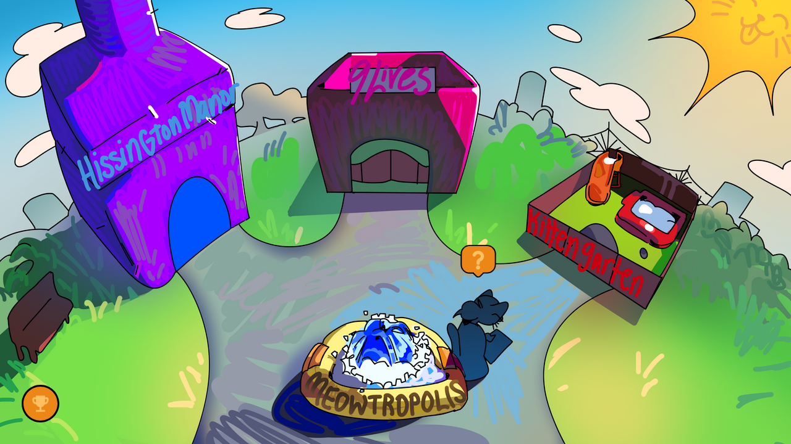
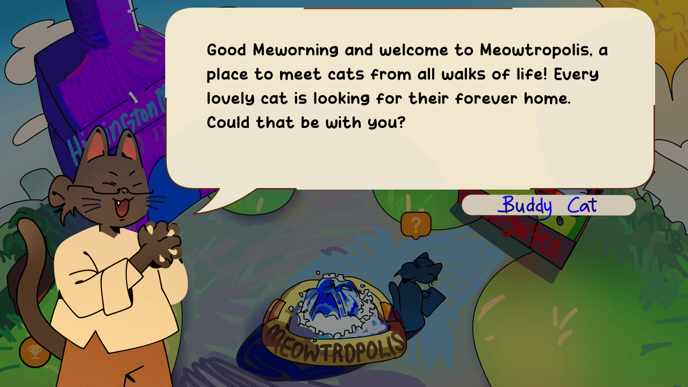
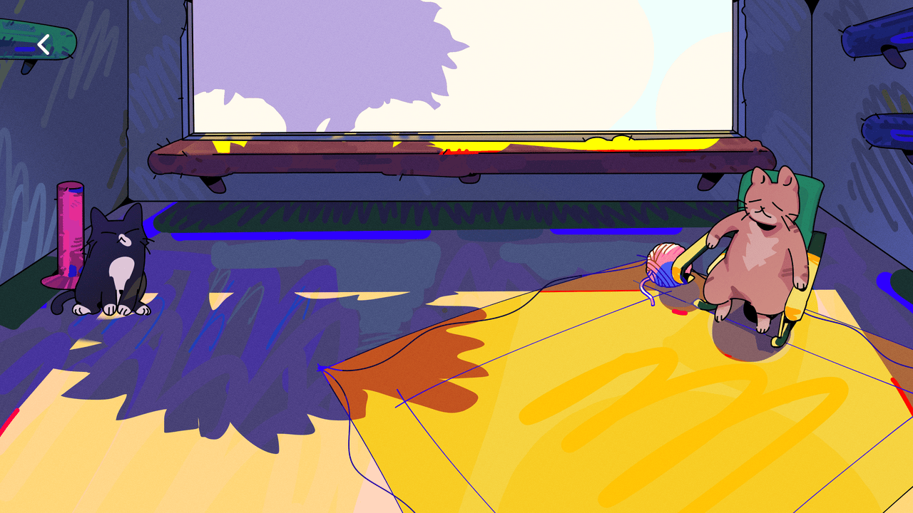
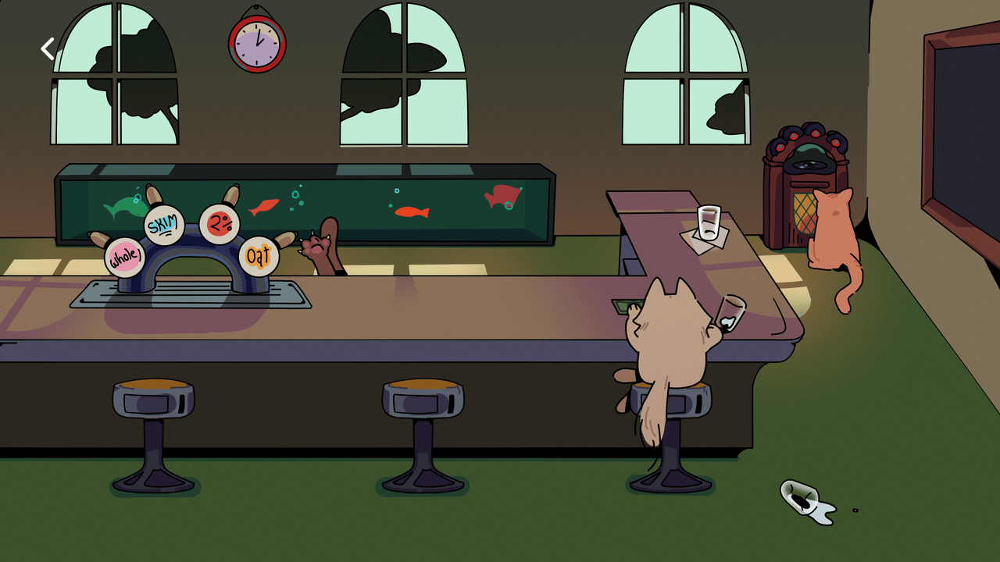
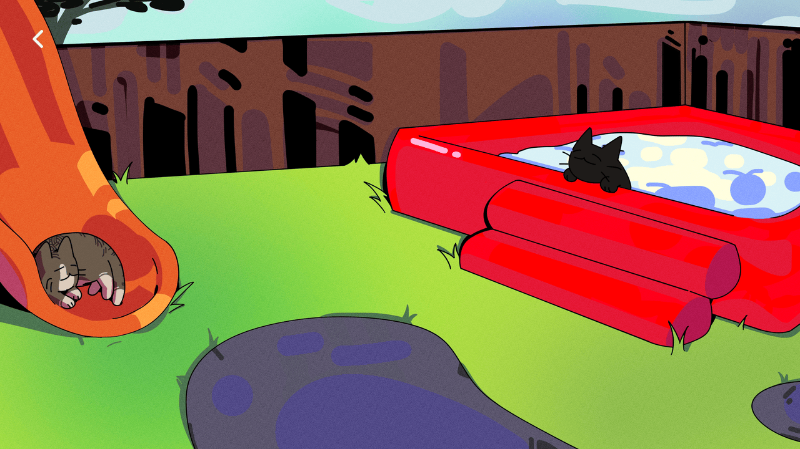
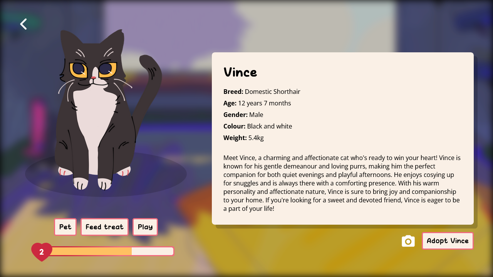
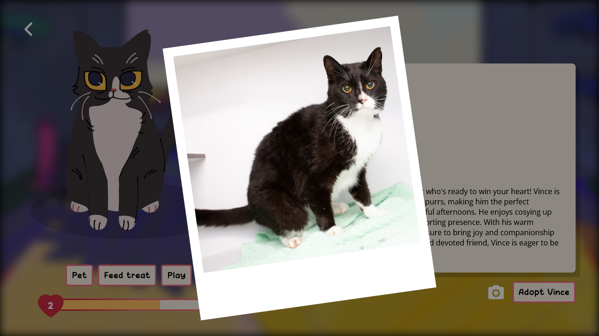
Objective
Our goal was to address the UN Sustainable Goal 15, Life on Land and promote the adoption of cats in shelters.
My role
- Ideated and pitched the project concept
- Created wireframes and planned out interactions with the digital cats
- Coded the website using HTML, CSS, and JavaScript languages
- Collaborated with our other programmer through a Github repository
- Worked closely and communicated with our illustrator
Process
Concept and Pitch
Prior to production, my task was to ideate and pitch an idea that addresses one of the UN Sustainable Goals. I chose to address Goal 15, Life on Land, due to my passion for animals.
Concept images were created in Canva to accompany my pitch, using them as a means of communicating my idea while also noting down the feasibility of the project as well as the required creatives that were needed to make this project.
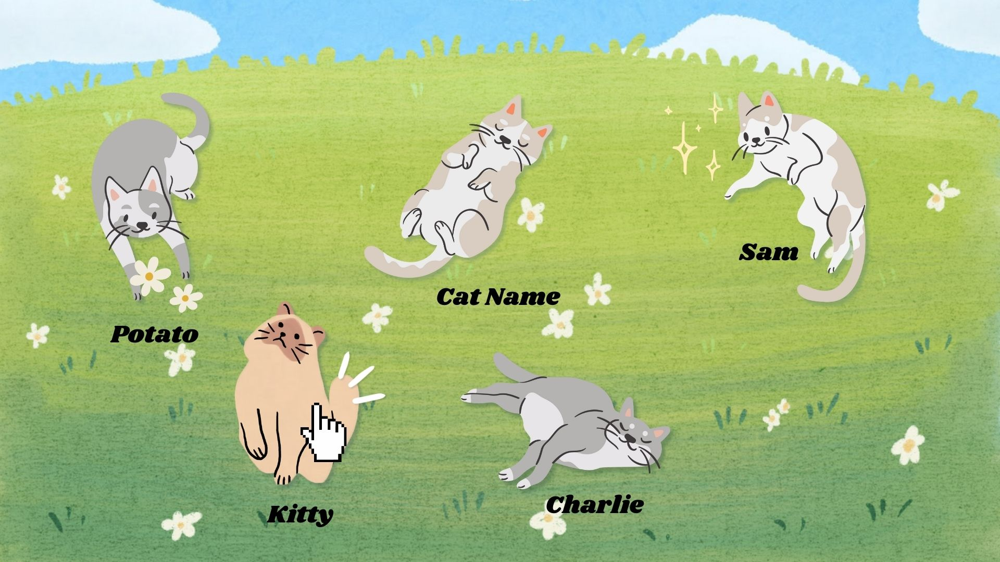
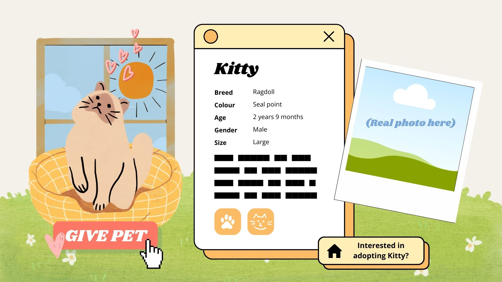
Early concept images
Cat profile concept
Mood board and style
A team collaborative board was made for our mood board and style inspiration, along with notes of games that we used for inspiration for the style.
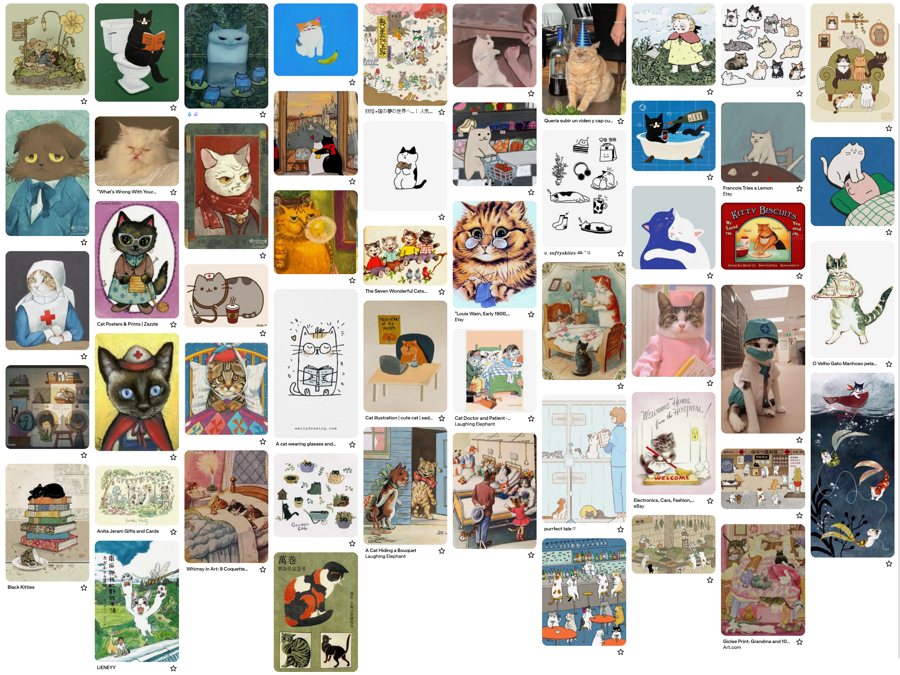
The cat mood board
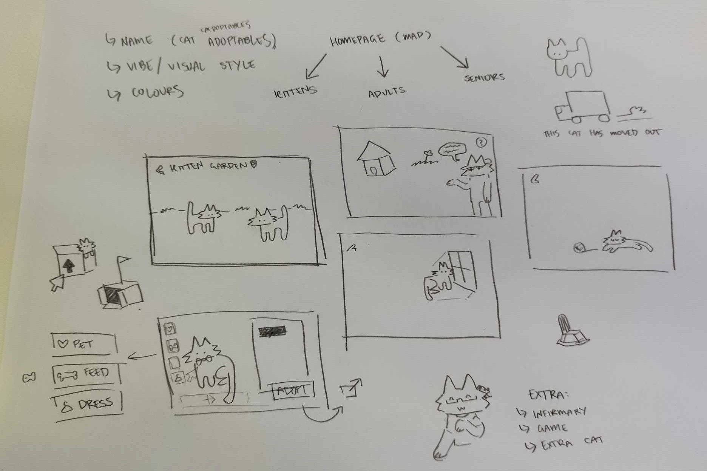
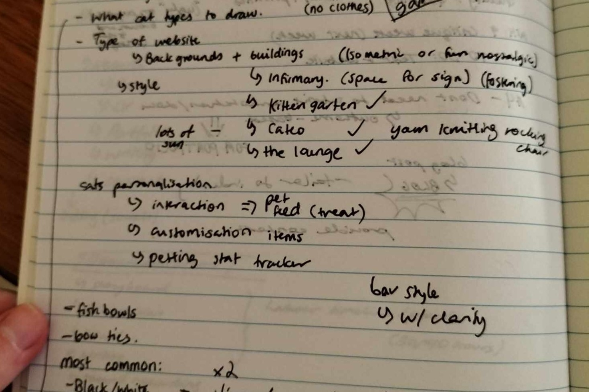
Notes from team workshopping
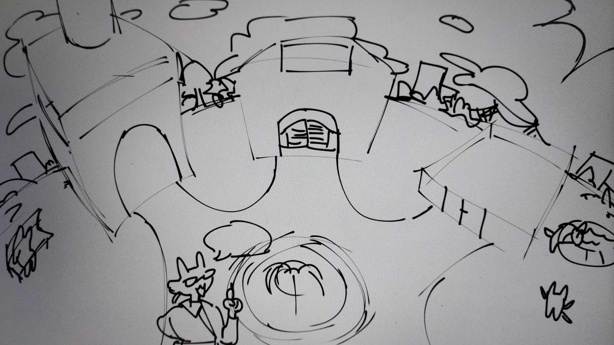


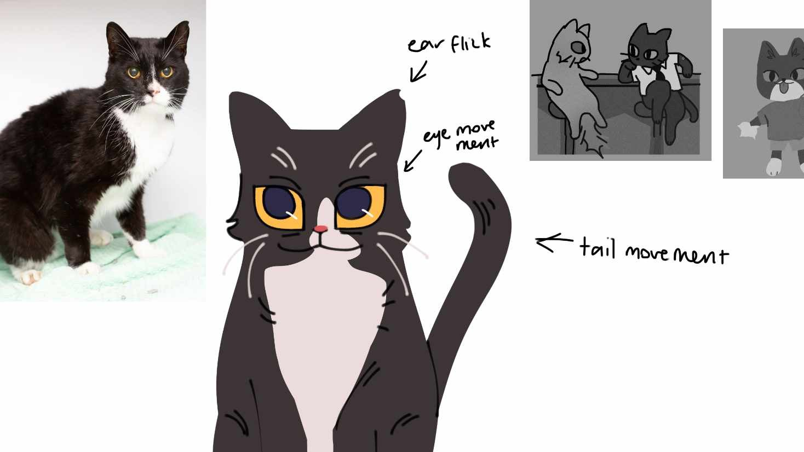
Sketches done by our illustrator
Interactive Wireframes
Interactive wireframes were created using the unfinished illustrations in placeholder.
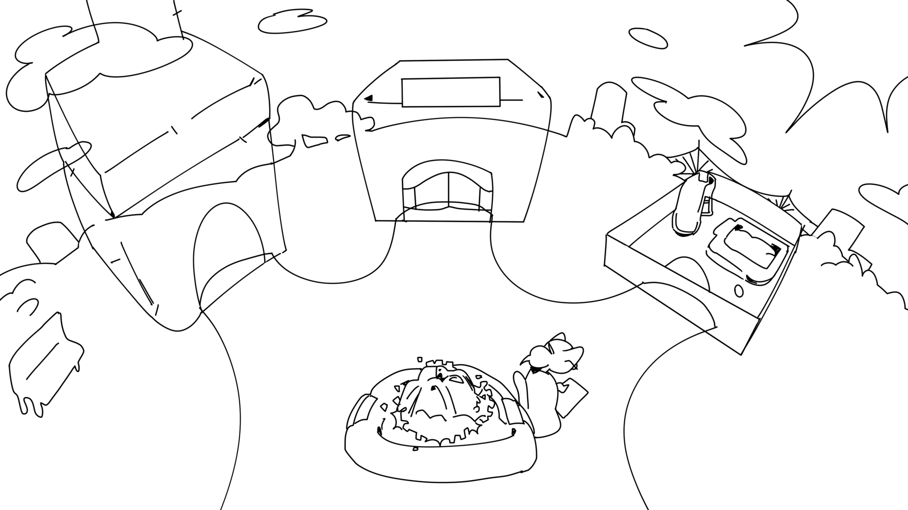
Illustrations and wireframe interactions


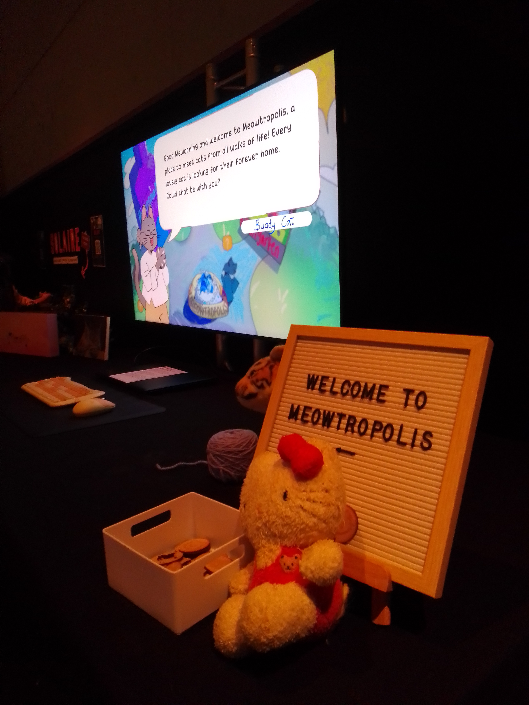
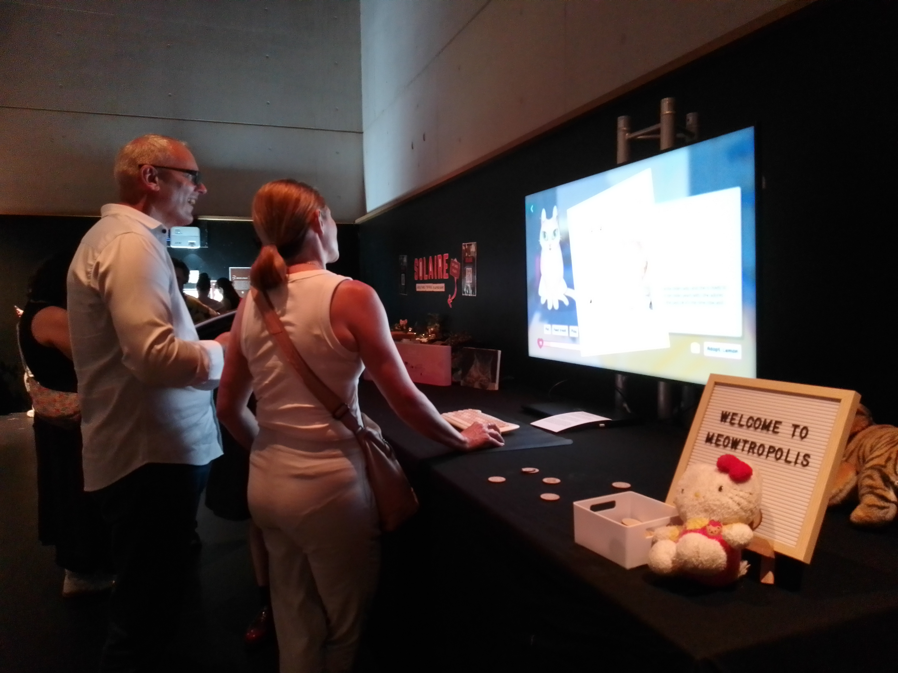
Photos from RESHAPE exhibition
The project was showcased at RESHAPE, the Bachelor of Creative Industries Graduate Exhibition!